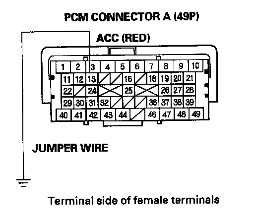

A/C Signal Circuit Troubleshooting
A/C Signal Circuit Troubleshooting1. Start the engine.
2. Turn the blower switch on.
3. Turn the A/C switch on.
4. Check the A/C CLUTCH in the DATA LIST with the HDS.
Does it indicate ON?
YES - Go to step 5.
NO - Do the A/C pressure switch circuit troubleshooting.
5. Check the A/C system.
Does the A/C system operate?
YES - The air conditioning system circuit is OK.
NO - Go to step 6.
6. Turn the ignition switch OFF.
7. Turn the ignition switch ON (II).
8. Activate the A/C CLUTCH in the INSPECTION MENU with the HDS.
Is there a clicking noise from the A/C compressor clutch?
YES - Do the A/C system test.
NO - Go to step 9.
9. Turn the ignition switch OFF.
10. Jump the SCS line with the HDS.
11. Disconnect PCM connector A (49P).
12. Turn the ignition switch ON (II).

13. Momentarily connect PCM connector terminal A13 to body ground with a jumper wire several times.
Is there a clicking noise from the A/C compressor clutch?
YES - Update the PCM if it does not have the latest software, or substitute a known-good PCM, then recheck. If the symptom/indication goes away with a known-good PCM, replace the original PCM.
NO - Check for poor connections or loose terminals at the A/C clutch relay and the PCM. If the connections are OK, check the A/C clutch relay, repair open in the wire between the PCM (A13) and the A/C clutch relay and the other A/C systems.